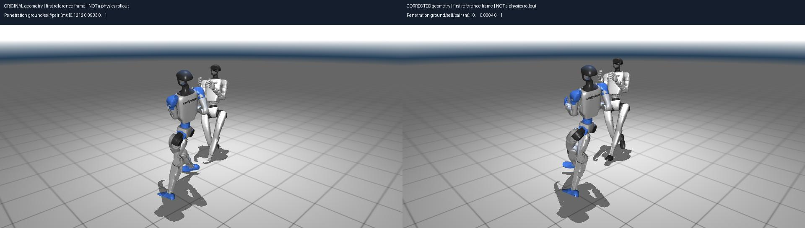

人形机器人格斗项目：实际实验进度与结果
2026-09-15 更新 · 既有结果与待实施方案分别标注 · 验收门槛不是实验成绩
当前核心问题：生成数据能否补充真人MoCap并改善格斗模仿学习？尚未获得肯定证据。已有生成、重定向与跟踪诊断结果保留；新方案以数据来源、质量、成本、独立训练效用和MoCap用量曲线为主线。
当前研究主线：构建高质量格斗示范数据
2026-09-15范围修订。种子审计已在本地/服务器完成；E2提交因断线未确认；正式数据效用训练未启动。研究重点是减少专业真人MoCap依赖的示范数据获取、生成和质量控制。Motion Tracking（动作跟踪）作为统一的下游学习验证工具；既有TWIST与几何修正实验保留为工程诊断。
课题：面向人形机器人模仿学习的物理约束格斗示范数据生成方法。核心判断是“生成的数据是否更好，以及是否真正改善学习或减少真人采集量”。新协议优先于下方历史优化建议。
主流程：MoCap／视频 → 来源审计 → 格斗动作生成 → 接触与物理约束 → 机器人参考数据 → 同一学习算法分别训练 → 独立测试与数据用量曲线。
| 新协议组别 | 数据对照 |
|---|
| A | 经核实的真人传感器MoCap |
| B | 真人MoCap加视频恢复 |
| C | 真人MoCap加普通生成 |
| D | 真人MoCap加接触与物理约束生成 |
各组同样的网络、奖励、预算和初始化，每组分别训练策略。进一步比较10/25/50/100%真人MoCap用量；不能用一个冻结控制器播放成功来代替数据效用实验。
现阶段边界：KungFuAthlete种子来自视频恢复，不是传感器MoCap。可先做视频种子扩增；专业MoCap节省、独立多来源测试和完整双人格斗学习仍待验证。旧的3.39%／0.78%／0.78%是历史视频种子试验，不是新四组结果。
数据工作：建立带来源、角色、接触置信度、成本、质量指标及失败案例的数据清单。跟踪器只做有限接口校准；无需先让旧控制器执行全部候选。
本轮实际完成：E1种子来源与完整性审计（本地完成，服务器复核一致）
检查53个原始NPZ，文件校验值与已固定来源清单一致，53个通过形状、有限数值和非零姿态检查。片段时长相加为24.04分钟；不是去重后的原始视频时长。
| 原有划分 | 片段数 | 视频标题组数 |
|---|
| 训练 | 45 | 18 |
| 验证 | 4 | 1 |
| 历史开发测试 | 4 | 1 |
关键缺口：验证和开发测试各只有1个标题组；所有53条均为单人视频恢复，不是传感器MoCap，也没有人工确认的攻击—防御接触标签。训练标题中的“完整版／分段”可能相关，18个标签组不能直接当18次独立采集。
没有发现逐数值完全相同的跨集合重复，原来源标签也不跨集合；人物身份、近重复和原始视频关系仍未核实，不能据此宣称无泄漏。实际采集、清洗和标注成本缺失，无法计算真实成本收益。
53条原始数据均需姿态四元数归一化；既有导出代码已经有这一步，不能把本项当成旧跟踪失败的新根因。最大片段关节速度为22.84弧度/秒，尚未按各关节硬件限值判定，不标为速度超限。
已保存逐条质量指标和待人工复核队列。服务器恢复连接后同输入审计完成，7项测试通过，随后会话再次断开；服务器原始结果文件尚待下载。没有得到合成数据改善学习的结果。
E2提交未确认：20对固定训练条件候选，比较原始／仅接触／仅时序平滑／二者结合，计划80个输出，分配两张A6000。启动命令发出后断线，未收到PID或完成标记，不能称已运行成功；重连后先检查任务，避免重复启动。
这次E2仅是人体运动学代理的组件消融：固定攻击者、保持骨长，检查接触是否改善，以及平滑是否损害动作幅度。它不代表机器人动力学可执行，也不是新的策略训练。
实际审计结果 · 逐条复核清单
展开完整修订协议：主张、5个实验块、MoCap节省、统计与2×A6000预算
当前执行协议：以示范数据为核心（2026-09-15）
本节替代下文历史方案的执行优先级。状态：E1种子审计已在本地及服务器完成；E2组件消融已发出启动命令但因断线未确认；正式数据效用对照未执行。
课题名称：面向人形机器人模仿学习的物理约束格斗示范数据生成方法。核心问题是低成本构建能够补充或减少专业真人 MoCap（传感器动作捕捉）用量的高质量示范数据。Motion Tracking（动作跟踪）提供统一的下游学习验证工具，不作为本文算法贡献。双人攻击—防御及接触关系是数据的研究对象；单机器人回放只用于检查接口。
本节是当前实验决策依据；对应机器可读配置为 configs/data_utility_protocol_v2.json。它是计划配置，不是训练启动器，launch_enabled=false。原训练队列、已完成结果和失败记录不改写、不重新命名为本协议实验。
本轮执行记录：先完成数据审计，再做受控组件试验
53条KungFuAthlete原始文件的校验值、形状和有限数值检查通过；45训练片段对应18个标题组，4验证片段和4历史开发测试片段各只有1组。标题组不是已核实的独立采集场次，部分完整版/分段标题可能相关。全部为单人视频恢复，人工语义/接触标注和成本记录缺失。原始四元数需归一化，原有导出已执行此步骤，不能将此项视为旧跟踪失败的新增根因。
本地结果：records/data_sources_v2/local_20260915_v2/；服务器同输入、同脚本审计已观察到完成，原始服务器JSON尚待下载。7项测试通过；环境规格保持457e8491/bbd2963d，未重新安装环境。早期审计v1把需归一化与结构损坏混为一个状态，保留v1记录；v2分别报告结构完整和是否可直接导出，未修改原始动作。
E2本轮限定为接触×时序平滑的2×2组件消融：复用同一批20条训练条件生成的双人候选，比较原始、仅接触、仅时序、二者结合。攻击者固定、每帧骨长保持、帧率/长度不变；接触权重1，绝对加速度正则权重1e-5，150步优化，学习率0.01，保真权重1、修正速度权重0.01。GPU0/1分别处理偶数/奇数索引，计划80个输出，不筛掉失败片段。
这不是完整Physics-aware方法，也没有训练新的tracking策略。 时序平滑只是人体运动学代理；接触评价仍用原弱几何条件，不能冒充独立人工真值或博士方案已有效。评价接触、骨长、攻击者不变性、加速度、位移和路径长度，检查是否靠静止化换取指标。
服务器入口为 scripts/run_data_constraint_ablation.py，复用 bash scripts/run.sh；输出 runs/data_constraint_v2/shard0 与 shard1，日志 records/data_constraint_v2/gpu0.log 与 gpu1.log。启动命令发出后会话超时，尚无PID或完成标记回执。恢复连接后先检查进程、结果和COMPLETE.json；不直接重提，以免重复任务或覆盖结果。
1. 两个待检验主张与贡献边界
1. 数据构建主张：在相同原始数据和生成候选预算下，接触与机器人约束能提高格斗语义、双人时空关系及参考动作质量，同时保留动作多样性。贡献集中在生成条件、约束机制和数据质量控制；通用姿态恢复、重定向、PPO和跟踪器复用现有模块。 2. 训练价值主张：同样的下游学习算法和预算下，使用这些数据能提高未见格斗动作的学习效果，或以较少的经核实真人 MoCap 达到预先规定的性能目标。该主张尚未证实。
需要排除的替代解释：增加训练步数或原始数据曝光；生成器预训练偷偷使用完整 MoCap；训练/测试视频重叠；只留下慢速站立动作；根据测试挑选样本；仅对某个冻结控制器过拟合。算法创新性仍须文献证据与消融支持，本协议不把候选模块视为已证明创新。
技术链路：已有MoCap／视频 → 来源与质量审计 → 格斗条件生成 → 接触与物理约束 → 通用重定向及参考导出 → 示范数据集 → 固定学习方法分别训练 → 独立测试。重定向和约束可以迭代，但目的始终是改善数据。
2. 先把数据来源分清
| 符号 | 数据含义 | 当前边界 |
|---|
| M | 经来源核实的光学或IMU真人MoCap | 本项目正式对照尚未建立；需要核实原始采集方式及许可 |
| V | 视频恢复的人体动作 | 现有KungFuAthlete武术种子属于这一类，不能称M |
| G | 生成模型产生的新动作 | 保留生成器、条件、随机种子、原始父样本和预训练来源 |
| R | 供机器人学习的Reference Motion（参考动作） | 是M/V/G重定向后的派生产物；变成机器人关节轨迹不会改变原始来源 |
现阶段允许先做 V、V＋普通生成、V＋本方法 的视频种子扩增试验。它只能回答“生成是否补充视频示范”，不能声称已经替代专业MoCap。未建立M之前，不绘制伪造的真人MoCap节省曲线。
数据清单沿用 combat/protocol.py 的来源划分检查，并补充审计字段：采集方式及证据、许可、原始视频/采集场次、演员身份（未知则标未知）、父样本、片段起止、角色、动作类别、接触部位与时间窗、标签置信度、重定向版本、原始/修正动作校验值、人工清洗分钟数、GPU小时、存储量。缺失字段记为未知，不用默认值伪装已审计。
先按原始采集场次/视频来源组划分训练、验证、测试，再切片和生成。双方、重叠片段、近重复片段及所有生成后代随父来源同组；可获得身份时额外检查人物重叠。生成和筛选只使用训练数据，模型选择只看验证集。此前4条动作来自1个已查看的视频组，继续作为开发集，不当最终测试。
接触标签分三级：人工/同步测量确认、视频或几何弱标签、未知。独立评价标签不得直接复制生成时的接触损失。不能用运动学距离推定真实接触力；执行提前失败时未观察到的后续接触记为删失/未知。
3. 主对照：固定学习方法，改变示范数据
| 组别 | 数据 | 回答的问题 |
|---|
| A | M | 真人MoCap基线 |
| B | M＋V | 视频能补充多少有效示范 |
| C | M＋G_generic（普通生成） | 通用生成的数据收益 |
| D | M＋G_ours（接触与物理约束生成） | 本方法相对普通生成的增益 |
这里的A/B/C/D是新协议编号，与历史第七步A/B/C定义不同，结果不得混用。双人训练使用配对参考及共同世界坐标；每组保留同样的角色、时序和任务覆盖要求。若暂只训练单机器人，结果明确降级为参考质量的辅助证据，不完成双人接触主张验收。
所有组固定机器人、仿真器版本、跟踪网络、奖励、优化器、总环境步数、评估任务和随机种子0/1/2。固定学习方法不等于冻结策略权重：每个数据组、每个种子都必须独立训练策略，同一种子使用相同初始化。冻结TWIST执行候选只属于兼容性诊断。
真人MoCap剂量主试验优先从头训练下游策略；若用预训练初始化，必须核实其动作先验与测试重叠，结论限定为“给定外部预训练先验后的新增MoCap需求”。生成器的外部MoCap预训练也要披露，不能称整个系统不依赖MoCap。
主试验固定总环境步数，记录每来源实际环境步数、重置次数和有效动作秒数。辅助试验匹配M/V实际曝光，额外计算单独报告，排除增强数据稀释原数据的影响。生成条件、候选数和随机噪声成对一致；拒绝率、候选总成本及最终保留数量全部报告。模型训练用增强比例只在验证集选择，随后锁定。数据质量对照同时报告相同候选预算与相同保留数量下的结果，避免只展示更严格筛选带来的收益。
4. 五个核心实验块
| 编号 | 主问题及比较 | 决定性证据 | 失败解释与执行门槛 |
|---|
| E1 来源、成本和质量 | M/V/普通生成/本方法 | 单位人工时间与GPU成本得到的有效格斗秒数；语义正确率、覆盖、多样性、标签可靠度 | 仅扩大量但有效率低不能称高质量；先核实来源与许可 |
| E2 机制消融 | 同生成器：无新增约束／仅接触／仅物理／二者结合 | 独立接触标注准确率、反应时序、机器人约束违规、相对父样本多样性 | 只减少穿插但动作变慢、接触丢失或多样性坍缩不算完整改进 |
| E3 数据训练价值 | A/B/C/D × 3种子 | 独立多来源未见动作的任务成功、跌倒率、全段跟踪误差；双人接触/反应成功 | 固定方法下重训；基线不可靠时结论不充分，不能归因于生成无效 |
| E4 MoCap用量曲线 | A与D各用10/25/50/100%嵌套M子集 | 达到预先固定性能目标所需的最小已测试M用量 | 生成器适配也只能使用同剂量M；达不到目标不宣称节省 |
| E5 泛化与失败分析 | 复用E3模型，在未见攻击组合、人物/来源及速度分层评估 | 攻击—防御接触、反应一致性、鲁棒性及失败类型 | 不在测试集再调模型；单人成功不能代替双人评价 |
E1/E2直接评价本文的数据方法，E3/E4支持实际学习价值，E5界定适用范围。Self-play、跨平台和新跟踪算法暂不加入首篇核心实验。
5. “减少MoCap依赖”怎样证明
M子集按独立来源组嵌套抽取，兼顾动作类别与配对关系，记录实际场次和有效秒数，不按相邻帧随机抽样。10%、25%、50%、100%是目标剂量，离散来源导致的实际比例照实报告。不能让10%的下游组使用在100%任务MoCap上适配过的生成器。
性能目标在验证集上预先规定并锁定，例如针对任务成功率及允许的跌倒率制定联合目标；它不是看完测试后选择的最好数字。最终比较两条曲线达到目标的最小实测剂量，报告种子和来源不确定性，不在稀疏点间随意插值。若本方法25%与基线100%均达到同一目标，只能在本任务与给定外部先验下报告已测试剂量差，不能推成普遍节省75%。
成本分列采集/授权成本、人工标注和清洗小时、视频恢复及生成GPU小时、数据存储；公开数据下载免费不等于原始采集成本为零。没有采购/工时证据时不虚构货币成本。
6. 指标与公平性
数据层：动作类别/组合覆盖、盲审语义正确率、双方角色与反应时序一致性、接触部位和时间窗准确率、脚滑/穿插、关节角/速度/加速度约束、原样本近重复率、多样性及保留率。FID（特征分布距离）仅在匹配表示及有效评价模型下作为辅助指标。
动力学层：力矩、支撑/接触及跌倒来自有版本记录的仿真执行；静态质心投影检查不能认证高速动态平衡。将“明确运动学违规”“在指定控制器下执行失败”“尚未判定”分开。用某跟踪器筛选时披露选择偏差；预算允许可用第二跟踪器做小规模敏感性检查，但不扩展为跟踪算法研究。
学习层：报告全段任务成功、跌倒率、接触成功、首次失败时间及位置/关节误差。误差在失败后被截断时同时报告有效评估时长，不能让早跌倒组因为少算困难帧显得误差更低。双人攻击—防御需分别报告双方执行及配对任务指标。
统计以训练种子和独立来源组为单位，不把同视频的相邻帧或并行环境当独立真人样本。至少3个下游种子，报告均值、标准差和配对差值；测试来源足够时做来源分组置信区间。若只生成一次数据，明确3种子只覆盖策略训练随机性，不声称整个生成链路重复3次。
7. 跟踪器的有限工程门槛
选定一个已核实实现作为统一下游工具。先检查关节、坐标、时间、初始姿态及速度接口，再在至少5个独立开发来源、20条质量确认的种子动作上校准。拟定工程门槛是80%全段跟踪通过，具体误差/跌倒判据在试验前固定；这是计划门槛，当前尚未达到或完成该评估，不是官方标准。
这一工程步骤建议总计最多12 GPU小时、一次接口纠正后的复核，不允许通过无限换跟踪器或持续加训练预算把论文变成控制研究。该上限是新计划资源约束，不是已消耗时间。达到门槛后冻结学习协议，再分别重训各数据组；若未达到，数据获取/生成/质量评估继续，下游效用标记“尚无法可靠判定”，回报明确工程阻碍。无需先让冻结控制器成功执行全部生成候选。
8. 当前证据重新归位
| 既有工作 | 已知结果 | 现在的用途与不能支持的结论 |
|---|
| 历史第七步9次等预算训练 | 视频种子3.39%，加普通生成0.78%，加适配与几何优化0.78%严格通过 | 受低基线和单开发来源限制的负面试验；不是专业MoCap替代实验 |
| 官方TWIST兼容性核验及候选执行 | 工程接口完成核验；生成配对严格通过仍低 | 冻结预训练控制器的覆盖诊断；不能证明训练增益或内在不可执行 |
| 48对几何修正、96次成对执行 | 穿插帧11952→1033；双人严格成功均0/48 | 可复现的后处理负对照；本轮没有用修正数据重训，不能据此否定数据效用 |
以上结果完整保留。旧版“接触保持重定向与可执行性修正”为首篇中心的建议现已撤销；重定向和控制器仍可作为必要工程基础。完整物理critic（评价网络）不是必须先实现的新模块，可靠标签不足时不训练它。
9. 2×A6000执行顺序与验收
先做来源清单和独立划分 → 同条件生成的数据质量对照 → 有上限的跟踪工具校准 → 视频种子小试验或有M的E3 → E4剂量曲线 → E5泛化。第一份可交付结果应是带来源、接触置信度、质量指标及失败案例的数据清单，而非另一段单机器人跟踪视频。
每卡48GB，不能自动当作单卡96GB。初始每卡一个任务；采用现有预训练生成模型适配，不训练大型视频基础模型。E3为4组×3种子＝12次策略训练；E4为2组×4剂量×3种子＝24次，若100%组的数据校验值、预算、初始化和种子完全一致，可复用6次，合计30次独立策略训练。生成器训练、E1/E2、视频恢复、工程诊断和可选视频小试验额外计费；E5复用策略。
新训练步数暂不锁为旧失败试验的12.288M步。先用30分钟吞吐测量与开发集学习曲线确定单次预算，再冻结；总GPU小时根据实测估计后记录。目前未启动这30次新试验，也未声称当前硬件已经完成完整方法验收。
第一篇最低完整证据：可追溯的数据构建方法；同条件约束消融；固定下游学习协议的独立多来源增益；至少一项明确的低成本/数据效率证据。若仍只有视频种子和几何改进，论文应限定为数据方法的初步实验，不能宣称已经替代专业MoCap或完成双人格斗学习。
完整协议源文件 · 机器可读计划（禁止自动启动）
下一步已执行：双人参考动作的几何与支撑脚修正
历史工程记录／当时方案。当前优先级已改为示范数据构建和训练效用验证，见当前协议；本节不作为继续优化跟踪算法的任务指令。
本轮完成48组几何优化、96次真实控制器执行。保留上一轮所有原始输入和结果。使用同一个TWIST预训练策略、同一个MuJoCo机器人及碰撞几何，时间长度、50Hz参考帧率、起始和成功判定规则相同。两台机器人始终在同一物理场景中。
上一版位置重定向主要拟合人体关节位置，没有加入机器人碰撞体和支撑脚约束。人体脚踝的位置不等于机器人脚底应当接触地面的位置，肢体形状也不同。于是“能转换为关节角度”并不意味着姿势无穿插。
这次具体做了什么？
- 在TWIST实际使用的机器人模型中读取地面、自身和双方的碰撞。使用接触法线及Jacobian（关节变化如何影响接触点位置的关系矩阵）估计修正方向。
- 用Sequential QP（逐次二次规划，即每次求一个小幅度的约束修正）同时考虑关节限位、原姿势保真、修正量连续性和碰撞。通过实际几何重新计算代价，避免只相信局部近似。
- 根据脚的相对高度和水平速度，估计支撑脚；约束脚底高度以及支撑期间的水平位置。这是启发式估计，不是真实接触标签。
- 限制关节和根部改动，保留共同世界坐标和原时序。没有降低播放速度、用站立替换动作或把两人移开来消除碰撞。
- 保存修正残差和动作变化，再由原控制器实际执行；几何优化后仍有碰撞或跌倒的片段照实计入。
R0＝原始姿势重新导出；R1＝修正姿势用同样方法导出。两组使用相同的正向运动学和速度重算方式，避免把格式转换当成优化收益。以前原始NPZ的直接运行保留作背景参考，不替代本轮R0对照。
首帧几何对照：左为原始参考，右为修正参考。这里只检查形状和穿插，尚未运行控制器，不能把这张图当成机器人稳定执行。

| 测试组 | 双人严格成功：R0→R1 | 两台全程未跌倒：R0→R1 | 几何穿插>1cm帧数：前→后 |
|---|
| 24组通用生成 | 0/24 → 0/24 | 0/24 → 0/24 | 5976/5976 → 539/5976 |
| 24组适配生成 | 0/24 → 0/24 | 0/24 → 0/24 | 5976/5976 → 494/5976 |
| 合计48组 | 0/48 → 0/48 | 0/48 → 0/48 | 11952/11952 → 1033/11952 |
最终判定：本版几何后处理不通过执行效果验收。穿插减少约91.4%，但没有获得双人严格成功，脚部滑动及部分速度指标反而恶化。保留它作为可复现的失败对照；不能作为后续“高质量合成数据”的已验证筛选器。
上一轮直接读取既有NPZ时曾有1/48双人不跌倒；本轮统一导出R0为0/48，说明速度重算/接口细节本身也影响边缘样本。两个数字属于不同输入处理条件。本轮R1收益只与相同导出的R0比较，不借用旧批次作为对照。
几何穿插按每帧原始/修正参考姿势的碰撞检测统计；跟踪成功和跌倒来自实际控制器仿真，二者不是同一指标。双人严格成功要求两台每帧满足关节、根部及身体位置误差门槛，而不是只要求站着。
动作改动和副作用
- 按片段平均的关节改动：0.059弧度。单关节设置0.65弧度变化范围，求解器有数值容差；这不是语义不变证明。
- 每片段最大双方根部相对位置变化的平均值：0.127米。共同坐标没有重置，但约束修正仍会改变双方相对几何。
- 在估计支撑区间内，参考脚部水平速度：0.165 → 0.265米/秒。这是参考动作的滑动代理指标，不是物理执行时滑动量。
- 32/48个片段的最大关节速度增加。当前没有硬性的全轨迹速度、加速度及力矩约束，不能将几何修正当作动力学可行性保证。
本轮仍是开发阶段的诊断。减少穿插不等于动态稳定，也不等于正确攻击、格挡或反击。若严格成功仍为零，应把这一结果视为“仅靠局部几何后处理不足”的证据，不能宣布物理约束格斗生成已经成功。试运行使用过适配样本000，本轮48组不作为未见测试集。尚未训练新的模仿策略，因此没有合成数据提高学习性能的结论。
真实双人执行：预先指定的样本000
两个视频都包含同一物理场景中的两台机器人。一个是原始姿势经过统一导出后的执行，另一个是修正后执行。全部状态由策略和物理仿真产生，视频为保存状态重渲染。
R0：原始姿势、统一导出。
R1：几何与支撑脚修正。是否成功以表格为准，不能只凭是否看起来在运动判断。
48组逐项审计：保留所有失败和副作用
| 样本 | 双人未跌倒 | 穿插>1cm帧 | 平均关节改动/rad | 最大关节速度/rad·s⁻¹ | 手腕—对方躯干距离平均变化/m |
|---|
| generic_000 | False → False | 249 → 2 | 0.065 | 33.1 → 32.4 | 0.051 |
| generic_001 | False → False | 249 → 1 | 0.034 | 28.4 → 28.9 | 0.022 |
| generic_002 | False → False | 249 → 1 | 0.081 | 27.6 → 30.0 | 0.058 |
| generic_003 | False → False | 249 → 14 | 0.056 | 32.9 → 39.7 | 0.047 |
| generic_004 | False → False | 249 → 4 | 0.049 | 24.3 → 25.1 | 0.055 |
| generic_005 | False → False | 249 → 2 | 0.029 | 32.9 → 32.3 | 0.020 |
| generic_006 | False → False | 249 → 8 | 0.066 | 42.4 → 42.4 | 0.044 |
| generic_007 | False → False | 249 → 19 | 0.074 | 25.2 → 30.4 | 0.074 |
| generic_008 | False → False | 249 → 68 | 0.083 | 35.6 → 37.9 | 0.047 |
| generic_009 | False → False | 249 → 1 | 0.035 | 31.0 → 35.3 | 0.030 |
| generic_010 | False → False | 249 → 4 | 0.039 | 33.4 → 38.7 | 0.026 |
| generic_011 | False → False | 249 → 14 | 0.068 | 31.5 → 31.5 | 0.042 |
| generic_012 | False → False | 249 → 2 | 0.043 | 38.2 → 40.2 | 0.035 |
| generic_013 | False → False | 249 → 33 | 0.058 | 41.5 → 41.4 | 0.026 |
| generic_014 | False → False | 249 → 76 | 0.083 | 42.1 → 38.8 | 0.049 |
| generic_015 | False → False | 249 → 17 | 0.069 | 38.7 → 38.0 | 0.068 |
| generic_016 | False → False | 249 → 58 | 0.072 | 29.4 → 30.1 | 0.040 |
| generic_017 | False → False | 249 → 5 | 0.037 | 33.6 → 47.3 | 0.033 |
| generic_018 | False → False | 249 → 38 | 0.089 | 33.5 → 33.9 | 0.047 |
| generic_019 | False → False | 249 → 23 | 0.068 | 36.6 → 37.9 | 0.059 |
| generic_020 | False → False | 249 → 11 | 0.051 | 27.8 → 30.8 | 0.032 |
| generic_021 | False → False | 249 → 7 | 0.034 | 32.9 → 32.5 | 0.024 |
| generic_022 | False → False | 249 → 30 | 0.068 | 31.3 → 41.8 | 0.049 |
| generic_023 | False → False | 249 → 101 | 0.101 | 35.0 → 35.0 | 0.068 |
| adapted_000 | False → False | 249 → 9 | 0.077 | 38.4 → 41.3 | 0.041 |
| adapted_001 | False → False | 249 → 12 | 0.032 | 46.9 → 42.2 | 0.026 |
| adapted_002 | False → False | 249 → 3 | 0.055 | 26.6 → 27.7 | 0.054 |
| adapted_003 | False → False | 249 → 39 | 0.064 | 31.6 → 31.6 | 0.050 |
| adapted_004 | False → False | 249 → 13 | 0.063 | 36.9 → 38.0 | 0.057 |
| adapted_005 | False → False | 249 → 6 | 0.023 | 31.3 → 42.5 | 0.014 |
| adapted_006 | False → False | 249 → 98 | 0.065 | 38.6 → 41.3 | 0.043 |
| adapted_007 | False → False | 249 → 27 | 0.087 | 34.8 → 34.5 | 0.069 |
| adapted_008 | False → False | 249 → 4 | 0.080 | 31.6 → 32.2 | 0.053 |
| adapted_009 | False → False | 249 → 2 | 0.022 | 49.7 → 49.7 | 0.014 |
| adapted_010 | False → False | 249 → 11 | 0.033 | 30.2 → 32.2 | 0.024 |
| adapted_011 | False → False | 249 → 1 | 0.062 | 36.8 → 31.8 | 0.040 |
| adapted_012 | False → False | 249 → 1 | 0.045 | 33.4 → 33.5 | 0.039 |
| adapted_013 | False → False | 249 → 0 | 0.030 | 41.2 → 41.4 | 0.027 |
| adapted_014 | False → False | 249 → 3 | 0.056 | 35.1 → 35.7 | 0.036 |
| adapted_015 | False → False | 249 → 41 | 0.060 | 40.3 → 40.3 | 0.061 |
| adapted_016 | False → False | 249 → 14 | 0.064 | 36.6 → 36.9 | 0.050 |
| adapted_017 | False → False | 249 → 91 | 0.081 | 34.4 → 46.1 | 0.048 |
| adapted_018 | False → False | 249 → 26 | 0.058 | 34.6 → 32.6 | 0.029 |
| adapted_019 | False → False | 249 → 44 | 0.090 | 37.6 → 50.9 | 0.072 |
| adapted_020 | False → False | 249 → 5 | 0.060 | 41.2 → 41.0 | 0.044 |
| adapted_021 | False → False | 249 → 13 | 0.046 | 29.0 → 28.2 | 0.048 |
| adapted_022 | False → False | 249 → 13 | 0.048 | 35.2 → 35.5 | 0.033 |
| adapted_023 | False → False | 249 → 18 | 0.059 | 30.7 → 30.6 | 0.052 |
手腕—躯干距离变化只检验交互几何变化，不表示已建立准确攻防接触标签。
下一阶段应解决的具体问题
把“先生成自由人体动作、再局部修补”升级为目标机器人约束下的轨迹优化：在生成或重定向阶段就约束脚底接触、姿态、速度与加速度，并通过实际跟踪反馈筛选。对双人动作还要保留攻击—反应时序及可达接触。先做短时、低冲击的双人格挡/闪避任务，确认可靠跟踪后再扩展高速碰撞；不能继续仅靠增加训练步数掩盖参考质量问题。
可核验记录：完整指标 · 方法与执行说明 · 独立数值见证。接触法线约定依据MuJoCo官方文档；未改动碰撞掩码。修复了跨帧初始修正量越过关节限位的问题，最终结果来自独立v2目录，未将未完成的v1批次混入。
已执行：TWIST官方预训练跟踪器与双机器人测试
历史工程记录／当时方案。当前优先级已改为示范数据构建和训练效用验证，见当前协议；本节不作为继续优化跟踪算法的任务指令。
2026-09-15：已部署并跑完57项固定测试。包括1项双机器人站立对照、8条原有单人参考、48组原有双人生成参考。另完成单机器人站立和独立复核。代码已接入现有项目，原BeyondMimic结果保留；本轮没有重新训练策略，也没有改写参考动作。
使用TWIST官方固定版本及通用预训练权重。Pretrained controller（预训练控制器）是已经学过动作跟踪的网络；每20毫秒根据目标动作与自身状态输出关节控制，MuJoCo每1毫秒执行一次真实物理步。不是把动画直接播放到机器人上。
| 测试组 | 样本数 | 严格整段成功 | 全程未跌倒 | 初始穿插>1厘米 |
|---|
| 此前选定的4条训练参考 | 4 | 2/4 | 4/4 | 3/4 |
| 4条开发集参考（同一来源组） | 4 | 1/4 | 3/4 | 4/4 |
| 24组通用生成双人动作 | 24 | 0/24 | 0/24 | 24/24 |
| 24组适配生成双人动作 | 24 | 0/24 | 1/24 | 24/24 |
双人组的“成功”和“未跌倒”要求两台都满足。严格成功要求整段每帧：保留的25个关节平均误差<0.3弧度、根部位置误差<0.15米、8个身体部位平均世界坐标误差<0.15米，同时骨盆高度不低于0.35米。未跌倒只是较弱的稳定性指标，不能替代正确跟踪。穿插按官方碰撞几何统计，包含穿地、自身和对方；不是已证实的真实机器人穿透量。
结论：新控制器已能执行部分原有武术动作，但双人严格跟踪仍未解决。不能把站立通过、动作像武术或双方发生碰撞写成格斗成功。现有生成→位置重定向链路尚未提供普遍适合直接执行的双人参考；模型碰撞几何差异也需要审计。这轮没有证明合成数据提高模仿学习。
双机器人同场景视频
以下画面均来自同一个物理场景中的两台受控机器人，蓝色与灰色用于区分。视频由实际仿真状态重新渲染；不是分屏拼接，也不是目标姿态回放。
工程对照：两台机器人站立5秒。用于验证两个策略实例、历史状态和共同物理环境；没有攻击/防御动作。
双人适配生成样本000：失败实例。展示初始几何问题和后续失稳，不能当作成功演示。
双人适配生成样本002：不跌倒不等于严格跟踪。保留相对运动偏差供检查；此视频展示的是控制器诊断，不代表攻防语义或接触准确。
单人南拳样本010。作为控制器能力对照，不能替代上面的双人任务。
接口和可靠性核验
- 官方策略23个动作输出，两个腕部旋转关节由目标直接交给PD（按位置误差施加关节力矩），合计25个执行关节。旧参考的4个腕部俯仰/偏航自由度在官方模型中固定，按名称显式记录遗漏，不假装完整29自由度跟踪。
- 官方源码的观测、10步历史、动作缩放、PD参数和力矩限幅被复用。与实际官方run()连续200个物理步核对，最终观测差异和qpos（机器人位置与关节角状态）差异均为0；已修正float32状态转换细节。
- 两台机器人各自拥有历史状态，输入共同世界坐标不独立居中；启用官方碰撞几何。碰撞力只说明发生物理接触，不代表正确击中/格挡。
- 本轮输入沿用已有NPZ的速度值；没有经过官方MotionLib额外19帧平滑。官方数据样例位于外部下载，本次以官方默认站立命令做基础验证；没有声称已跑完其原论文评测集。
为什么还不能直接宣称优于BeyondMimic？
此前每项BeyondMimic只训练12.288M环境步，约为上游配置训练上限的1/240；上限并非必须训练量。本轮同时改变了预训练来源、仿真器、机器人关节数、起始随机扰动和评价身体集合，因此只能说现有项目获得了一个可运行的更广覆盖候选控制器，不能把百分比差异归因于算法本身。预训练数据与我们的数据是否重合尚未核实。
下一步聚焦什么？
- 保留TWIST作为可执行性诊断后端；先在同一MuJoCo几何中排除初始穿地、自身穿插，并增加支撑脚约束。每次修正保存前后误差和动作语义，避免只靠降低难度提高成绩。
- 对两个身体联合重定向，约束相对位置、可达性、攻防时序和接触；先让短时低速格挡/闪避动作通过，再处理高速碰撞。
- 只有可靠双人参考和跟踪基线成立后，再固定训练预算比较真实数据与真实＋生成数据，评价未知动作泛化。
展开全部57项结果（不隐藏失败）
| case | 各机器人严格成功 | 各机器人未跌倒 | 关节MAE/弧度 | 根误差/米 | 初始穿插/厘米 |
|---|
| dual_adapted_000 | [False, False] | [False, False] | 0.409, 0.583 | 0.877, 0.762 | 13.8 |
| dual_adapted_001 | [False, False] | [False, False] | 0.459, 0.407 | 1.954, 0.642 | 12.3 |
| dual_adapted_002 | [False, False] | [True, True] | 0.365, 0.394 | 0.341, 1.062 | 13.4 |
| dual_adapted_003 | [False, False] | [False, False] | 0.496, 0.495 | 1.347, 0.494 | 12.0 |
| dual_adapted_004 | [False, False] | [False, False] | 0.432, 0.459 | 0.737, 2.319 | 14.4 |
| dual_adapted_005 | [False, False] | [False, False] | 0.519, 0.410 | 0.509, 2.276 | 12.1 |
| dual_adapted_006 | [False, False] | [False, False] | 0.472, 0.543 | 1.577, 0.553 | 12.4 |
| dual_adapted_007 | [False, False] | [False, False] | 0.498, 0.475 | 0.756, 2.241 | 12.1 |
| dual_adapted_008 | [False, False] | [False, False] | 0.465, 0.525 | 0.698, 1.459 | 14.5 |
| dual_adapted_009 | [False, False] | [False, False] | 0.409, 0.417 | 1.747, 1.466 | 8.1 |
| dual_adapted_010 | [False, False] | [False, False] | 0.449, 0.441 | 0.672, 1.991 | 16.6 |
| dual_adapted_011 | [False, False] | [False, False] | 0.584, 0.553 | 0.625, 1.043 | 16.0 |
| dual_adapted_012 | [False, False] | [False, False] | 0.451, 0.528 | 0.723, 0.538 | 15.2 |
| dual_adapted_013 | [False, False] | [False, False] | 0.423, 0.445 | 0.937, 0.945 | 15.1 |
| dual_adapted_014 | [False, False] | [False, False] | 0.474, 0.430 | 0.538, 1.401 | 16.0 |
| dual_adapted_015 | [False, False] | [False, False] | 0.480, 0.526 | 1.493, 0.749 | 12.6 |
| dual_adapted_016 | [False, False] | [False, False] | 0.620, 0.448 | 1.729, 0.727 | 15.7 |
| dual_adapted_017 | [False, False] | [False, False] | 0.482, 0.513 | 1.077, 0.874 | 6.4 |
| dual_adapted_018 | [False, False] | [False, False] | 0.481, 0.443 | 1.757, 1.059 | 14.1 |
| dual_adapted_019 | [False, False] | [False, False] | 0.545, 0.527 | 1.048, 1.167 | 14.9 |
| dual_adapted_020 | [False, False] | [False, False] | 0.534, 0.485 | 1.037, 1.567 | 9.1 |
| dual_adapted_021 | [False, False] | [False, False] | 0.490, 0.419 | 0.943, 0.726 | 9.9 |
| dual_adapted_022 | [False, False] | [False, False] | 0.435, 0.440 | 2.041, 1.490 | 15.7 |
| dual_adapted_023 | [False, False] | [False, False] | 0.601, 0.457 | 1.223, 2.287 | 10.8 |
| dual_generic_000 | [False, False] | [False, False] | 0.392, 0.539 | 1.055, 0.536 | 12.1 |
| dual_generic_001 | [False, False] | [False, False] | 0.417, 0.362 | 0.865, 0.891 | 16.8 |
| dual_generic_002 | [False, False] | [False, False] | 0.426, 0.536 | 1.054, 1.014 | 16.0 |
| dual_generic_003 | [False, False] | [False, False] | 0.502, 0.507 | 1.166, 1.373 | 8.8 |
| dual_generic_004 | [False, False] | [False, False] | 0.469, 0.518 | 0.942, 2.063 | 9.9 |
| dual_generic_005 | [False, False] | [False, False] | 0.464, 0.347 | 0.950, 0.646 | 11.2 |
| dual_generic_006 | [False, False] | [False, False] | 0.542, 0.521 | 1.081, 0.527 | 11.5 |
| dual_generic_007 | [False, False] | [False, False] | 0.448, 0.435 | 1.216, 1.238 | 11.8 |
| dual_generic_008 | [False, False] | [False, False] | 0.439, 0.533 | 1.599, 1.426 | 18.9 |
| dual_generic_009 | [False, False] | [False, False] | 0.478, 0.437 | 1.507, 0.912 | 14.4 |
| dual_generic_010 | [False, False] | [False, False] | 0.405, 0.487 | 0.501, 2.006 | 12.8 |
| dual_generic_011 | [False, False] | [False, False] | 0.508, 0.463 | 1.383, 1.332 | 11.1 |
| dual_generic_012 | [False, False] | [False, True] | 0.482, 0.339 | 1.443, 1.001 | 11.6 |
| dual_generic_013 | [False, False] | [True, False] | 0.311, 0.396 | 1.499, 1.601 | 15.5 |
| dual_generic_014 | [False, False] | [False, False] | 0.553, 0.413 | 0.527, 2.066 | 15.7 |
| dual_generic_015 | [False, False] | [False, False] | 0.504, 0.555 | 0.850, 0.873 | 18.2 |
| dual_generic_016 | [False, False] | [False, False] | 0.498, 0.438 | 1.025, 0.881 | 14.2 |
| dual_generic_017 | [False, False] | [False, False] | 0.465, 0.378 | 0.682, 1.280 | 11.2 |
| dual_generic_018 | [False, False] | [False, False] | 0.455, 0.561 | 1.174, 0.862 | 13.0 |
| dual_generic_019 | [False, False] | [False, False] | 0.527, 0.539 | 1.036, 0.779 | 12.0 |
| dual_generic_020 | [False, False] | [False, False] | 0.465, 0.418 | 1.499, 1.317 | 9.6 |
| dual_generic_021 | [False, False] | [False, False] | 0.427, 0.348 | 0.682, 1.177 | 13.9 |
| dual_generic_022 | [False, False] | [False, False] | 0.644, 0.428 | 0.748, 1.144 | 15.1 |
| dual_generic_023 | [False, False] | [False, False] | 0.571, 0.536 | 0.673, 1.049 | 11.1 |
| dual_standing | [True, True] | [True, True] | 0.097, 0.097 | 0.037, 0.037 | 0.0 |
| kungfu_test4_000 | [False] | [True] | 0.118 | 0.212 | 3.8 |
| kungfu_test4_001 | [False] | [False] | 0.359 | 0.399 | 2.5 |
| kungfu_test4_002 | [True] | [True] | 0.104 | 0.034 | 2.7 |
| kungfu_test4_003 | [False] | [True] | 0.245 | 0.414 | 3.3 |
| kungfu_train20_000 | [False] | [True] | 0.262 | 0.777 | 0.4 |
| kungfu_train20_008 | [False] | [True] | 0.176 | 0.191 | 4.6 |
| kungfu_train20_010 | [True] | [True] | 0.114 | 0.033 | 2.4 |
| kungfu_train20_014 | [True] | [True] | 0.161 | 0.091 | 5.3 |
这里的平均误差覆盖完整时段，包含跌倒之后；原始JSON另外保存首次跌倒时间、跌倒前关节误差和连续严格成功时长。不要将全程均值当作删去失败后的成绩。
复现实验记录：完整指标与来源校验值；官方代码一致性；独立执行见证。环境复用，不安装完整Isaac Gym训练栈；官方源码/模型约59 MB。
9月15日：清理完成，四项诊断实验已完成
ACS-OMI-AMI的413份训练模型已无损归档并校验，删除对应服务器副本；连同重复下载分片释放约133 GiB。原始数据、患者级表格、日志和完整预训练模型保留。
随后四项同预算训练、32组固定参考评估全部完成，总训练49,152,000环境步。详细结果见下节。模型权重留在服务器，代码、协议、汇总、配置、压缩日志及视频同步GitHub。
ACS归档与清理凭据
优化诊断：接口与采样方法的实际结果
历史工程记录／当时方案。当前优先级已改为示范数据构建和训练效用验证，见当前协议；本节不作为继续优化跟踪算法的任务指令。
完整完成 4/4 项，评价 32/32 组。每项训练预算相同：512环境、1000次更新、12,288,000环境步，种子0。下表是每条参考先独立计算、再等权平均。
| 实验 | 状态 | 共同第一条：严格通过 | 四条选定参考：严格通过 | 开发留出：严格通过 | 开发留出：观察覆盖秒数 |
|---|
| 单参考／上游接口 | 训练和评价完成 | 0.00% | 0.00% | 0.00% | 0.192 |
| 单参考／现有均匀接口 | 训练和评价完成 | 0.00% | 0.00% | 0.00% | 0.239 |
| 四参考／均匀采样 | 训练和评价完成 | 0.00% | 26.56% | 0.78% | 1.144 |
| 四参考／自适应采样 | 训练和评价完成 | 0.00% | 25.00% | 3.12% | 1.103 |
严格通过：全段未触发失配，且平均身体位置误差<0.15米、根部位置误差<0.15米、关节角误差<0.3弧度。覆盖秒数是首次失配或全段完成前的时长；不是单独标注的跌倒时间。
每个条件只有一个训练种子；开发留出来自同一个视频来源组，不能据此宣称统计显著或普遍泛化。单参考实验只有第一条是训练动作，其余三条是迁移检查。上游和现有接口还改变了重置、对齐及参考结束处理，差异不能全部归因于采样。这批实验未添加合成数据，不能证明合成数据效用。
每条训练参考的差异
| 参考编号 | 均匀采样严格通过 | 自适应严格通过 | 均匀：实际训练步数占比 | 自适应：实际训练步数占比 |
|---|
| sample_000 | 0.00% | 0.00% | 12.38% | 14.36% |
| sample_008 | 0.00% | 0.00% | 19.50% | 21.21% |
| sample_010 | 37.50% | 34.38% | 36.43% | 34.31% |
| sample_014 | 68.75% | 65.62% | 31.70% | 30.12% |
均匀采样让四条动作被抽到的次数接近相同，但困难动作提前失配，实际交互步数仍明显较少。自适应提高了部分困难动作的训练占比；这不等于已解决完整动作执行问题。
本轮结论与下一步
相较四参考均匀采样，自适应的开发严格通过率变化为+2.34个百分点，训练参考平均变化为-1.56个百分点。结果有动作依赖性，不能由单个种子确认稳定收益。
本轮尚未建立足够可靠的基础跟踪能力，暂不扩大合成数据效用实验。先用人工确认的站立、慢速摆臂、重心转移等简单参考做校准，再逐项检查初始状态对齐、根部速度、足底接触、动力学可执行性与训练时随机起点／评价时固定起点的差异。这些是下一轮待验证假设，不是已经确认的唯一失败原因。原方案的简单训练参考≥80%、匹配验证来源≥60%为建议工程门槛；本批参考尚未人工认证为简单基准，不能声称已完成该校准。
完整展示四条选定训练参考
按冻结清单展示全部四条参考；从上到下为000、008、010、014，每排左侧是参考，中间是均匀采样策略，右侧是自适应策略。固定环境0，未按成功率挑选展示动作。
单参考接口对比
四参考采样对比
视频使用共同第一条训练参考和第一条开发留出参考，固定环境0，上排训练参考、下排开发参考；每排从左到右为参考与两种策略。首次失配后冻结，4倍慢放。MuJoCo仅渲染已记录的Isaac轨迹，不是跨仿真器策略测试。
详细结果、实际采样次数与来源校验
第七步：筛选与合成数据效用验证
已完成 9/9 次同预算控制器实验（含复用的真实来源种子0）。每次512环境、1000次更新、12,288,000环境步；统一4条开发留出动作。
| 数据组 | 种子 | 状态 | 严格跟踪通过 | 全段未失配 |
|---|
| real | 0 | complete | 3.91% | 3.91% |
| real | 1 | complete | 3.91% | 3.91% |
| real | 2 | complete | 2.34% | 3.12% |
| generic | 0 | complete | 0.78% | 0.78% |
| generic | 1 | complete | 1.56% | 1.56% |
| generic | 2 | complete | 0.00% | 0.00% |
| contact | 0 | complete | 0.78% | 0.78% |
| contact | 1 | complete | 0.78% | 0.78% |
| contact | 2 | complete | 0.78% | 0.78% |
real：20条视频来源动作；generic：加20条普通生成防守动作；contact：加20条适配器＋骨长约束接触生成防守动作。新增条件来自训练集。contact尚未经过可靠的物理筛选，不等于物理可执行数据。四条留出片段属于同一视频标题组，且此前已用于开发诊断。
物理筛选门槛
完整物理评价网络需要可靠的接触、跌倒、碰撞标签，当前尚不具备。本轮训练了三个种子的较小覆盖预测器，仅预测固定控制器何时首次失配；使用48条既有真实仿真记录，按提示词来源分组。
| 种子 | 预测误差（秒） | 常量基线误差（秒） |
|---|
| 0 | 0.02912 | 0.02792 |
| 1 | 0.02788 | 0.02792 |
| 2 | 0.02800 | 0.02792 |
不批准用于自动筛选可执行动作：原校准动作全都提前失败，K=6排序仍未产生完整执行成功的候选。预测失配时间不等于预测动作物理可行性。
每组3个控制器种子的平均结果
| 组别 | 严格通过率：均值±标准差 | 全段未失配：均值±标准差 | 首次失配/完成时间 |
|---|
| real | 3.39% ± 0.90% | 3.65% ± 0.45% | 1.025 秒 |
| generic | 0.78% ± 0.78% | 0.78% ± 0.78% | 0.876 秒 |
| contact | 0.78% ± 0.00% | 0.78% ± 0.00% | 0.886 秒 |
三个控制器种子的配对差值
| 比较 | 严格通过率平均差值 | 种子间标准差 |
|---|
| generic minus real | -2.60 个百分点 | 0.45 个百分点 |
| contact minus real | -2.60 个百分点 | 0.90 个百分点 |
| contact minus generic | 0.00 个百分点 | 0.78 个百分点 |
这是固定预算下的小规模开发结果；不把3个种子或32个环境当作独立数据来源，也不由此宣称完整双人格斗方案成功。
接触经过重定向后是否保留？
从固定版本GMR模型核对并加入已有脚尖辅助坐标后，20条训练条件均可进行几何检查；旧版不含脚尖的审计结果仍保留。普通生成组重定向后近似接触通过率为 0.0%，接触约束组为 20.0%。这只是球体及辅助坐标的几何近似，不是碰撞网格或接触力认证。训练数据没有因此改变。
本轮结论：本轮两组合成数据均未提高平均严格跟踪通过率。基线本身也较弱，当前证据不能区分控制器覆盖不足、数据分布差异和接触重定向损失的贡献，不能据此断言合成数据路线不可行。完整物理评价网络与双人格斗验证仍未通过。
相同留出动作的实际执行对比
左上参考、右上A真实来源、左下B普通生成、右下C接触约束。统一控制器种子0、第一条留出动作和环境0；首次失配后冻结，4倍慢放。MuJoCo只负责渲染Isaac实际轨迹，不是跨仿真器策略部署。
完整结果与来源校验 · 实验协议及范围
2026-09-15 优化方案：先建立可学习参考，再验证接触增强的效用
历史工程记录／当时方案。当前优先级已改为示范数据构建和训练效用验证，见当前协议；本节不作为继续优化跟踪算法的任务指令。
推荐保留课题“面向人形机器人模仿学习的物理约束格斗动作生成方法”，首篇收敛到“面向双人格斗参考动作的接触保持重定向与可执行性修正”。 这是待检验研究方案，不是已实现或已证明的新算法。暂不同时扩展在线反应、Self-play（自对弈）、跨机器人和大型生成模型。最终仍需证明生成参考改善机器人学习，不能止步于重定向几何指标。
1. 结果说明什么，不能说明什么
| 数据组 | 种子0严格通过 | 种子1 | 种子2 | 均值±样本标准差 | 全段未失配均值 |
|---|
| A 视频来源20条 | 3.90625% | 3.90625% | 2.34375% | 3.39%±0.90% | 3.65% |
| B A＋普通生成20条 | 0.78125% | 1.5625% | 0% | 0.78%±0.78% | 0.78% |
| C A＋适配器和接触优化20条 | 0.78125% | 0.78125% | 0.78125% | 0.78%±0.00% | 0.78% |
相对A，B/C严格通过率均下降2.60个百分点、约76.9%。低基线下相对变化容易显得很大，必须同时报告绝对值。这只是3个控制器种子、1个开发视频来源组的观察，不进行显著性或总体有效性推断。误差统计在首次失配时截断，不能因B的平均关节误差较小就认为B更好。数据来源和分析校验值见 records/step7/bottleneck_audit.json。
| 观察 | 可能解释（未证实） | 下一步怎样区分 |
|---|
| A也只有3.39%严格通过 | 控制器训练不足、采样策略、参考质量、初始化或坐标/时间约定问题 | 先对同一少量参考做单动作与多动作对照，核对重置/FK/速度/奖励分项 |
| 20个训练条件：人体近似接触19/20，机器人4/20 | 分别对两人求IK（逆运动学）没有约束双方接触，人体与机器人形态不同 | 相同生成动作，比较独立IK和双机器人联合接触优化 |
| B/C每条参考的峰值关节速度中位数34.45/33.42 rad/s，最高49.59/53.79 rad/s | 相邻帧IK解不连续、目标过快或形态不可达 | 按关节名称核对电机限速，并检查速度/加速度与初始速度；峰值本身不是已认证的超限标签 |
| B/C采用40条均匀抽样，A只有20条 | 原动作训练机会被分摊、合成分布与武术留出集不一致 | 记录每来源实际环境步数；用真实动作重放匹配数据曝光和额外计算 |
| 物理覆盖预测接近常量基线，所有候选提前失败 | 标签主要刻画弱控制器覆盖范围，没有完整成功样本 | 先补阳性/阴性/未知三类执行记录，再考虑学习筛选器 |
代码事实：combat/multireference_tracking.py 重写了 _adaptive_sampling，目前为均匀片段/帧抽样；这不是原框架完整自适应采样协议。scripts/retarget_paired_positions.py 使用每帧8次位置IK、固定0.75比例与关节角限制，没有相邻帧速度、足接触或双人碰撞约束。求解器内部迭代时间不等于真实动作时间。这些差异值得消融，不能仅凭阅读代码认定某一处是失败根因。
2. 修改后的算法流程
已有视频/动作 → 来源隔离与质量审计 → 小规模可稳定跟踪的种子参考 → 冻结人体生成器产生候选 → 机器人空间的双人联合修正 → 实际跟踪执行与分层验收 → 小比例混入参考库 → 同预算且控制曝光的效用比较。
保留TIMotion作为现成候选生成器、G1/Isaac Lab作为首个平台和PPO作为学习基线。先固定完整攻击者轨迹做离线生成，等接触和执行链路成立后再做仅历史条件的在线反应。已有人体接触优化保留为对照，不把所有模块同时替换。
3. 优先级P0：修好测量与跟踪基础
先从训练来源中按预先规则选择4条无跳跃、无翻滚、无器械的短动作，覆盖架势、出拳、收拳/格挡、迈步；角色与动作标签人工核验。采用每类相同数量，长度约2–4秒；不能根据最终留出集成功率选择训练片段。数据可用性不足时记录缺类，先做具备的动作，不冒充完整格斗数据。
先检查单位、坐标轴、四元数顺序、关节名称、50Hz参考与控制时间、正运动学一致性、初始足部高度和根部速度；检查动作片段边界终止与PPO超时自举是否一致，避免在片段终点从无关参考估值。记录终止原因、每个奖励分项、实际步数和力矩饱和率。上述均是诊断项目，不预设发现了程序错误。
第一批诊断最多4个单种子训练：同一动作的上游命令与单片段多参考接口各1次；相同4动作的均匀与按失败难度自适应采样各1次。同预算512环境×24步×1000更新，比较训练参考整段跟踪和预留验证参考。自适应采样应保留均匀下限、限制过难片段权重，并在每片段内部采样，不能直接拼接上游全长分箱导致跨片段。先排除接口差异，再决定是否继续扩展训练。
建议工程门槛（不是论文标准或已有成绩）：在简单训练参考上严格通过≥80%，在匹配任务的验证来源上≥60%，才扩大合成数据效用实验。门槛沿用现有误差定义，不能通过放宽成功阈值凑达标。若小规模也不通过，先检查数据和实现；允许预先限定的训练扩展到3000/6000更新，最多6000。只根据训练/验证决定，记录学习曲线和所有预算；未达门槛则暂停大规模比较并报告原因。
4. 优先级P1：在机器人空间保持接触
用人体生成结果初始化两台机器人的参考，联合优化整段的根部位姿与关节角，而不是人体修正后两人分别IK。条件为动作意图、接触事件、机器人形态；接触事件记录双方部位、开始/结束帧、允许接近方向、置信度与可观测性。保留共同世界坐标，禁止分别重新居中掩盖相对距离错误。
目标函数可写为：L = w_pose L_pose + w_contact L_contact + w_smooth L_smooth + w_foot L_foot + w_collision L_collision。pose（姿态保真）限制偏离原动作；contact（接触）匹配机器人表面距离及时间窗口；smooth（时间连续）抑制速度/加速度尖峰；foot（支撑足）减少滑动；collision（碰撞）排除非预期穿透。权重只由验证集确定。
硬约束：q_min ≤ q_t ≤ q_max，|q_t−q_(t−1)|/Δt ≤ v_max，|q_t−2q_(t−1)+q_(t−2)|/Δt² ≤ a_max。使用目标机型每个关节的配置与可靠资料，不能把统一经验限速冒充硬件规格；未知加速度限制标为研究设定。对身体旋转采用合法旋转表示及连续性处理，不能对四元数分量直接差分。
首版使用机器人几何胶囊/碰撞体与命名接触点，替代缩放人体球体作为唯一判据；报告代理与实际碰撞体的误差。Hit（击中）需要目标表面和时刻一致；Block（格挡）还需验证拦截先于受保护躯干接触；Avoid（避让）需要“原本会命中”的威胁对照，暂不以拉远双方位置计成功。先做低速出拳—前臂格挡/躯干软目标，暂缓高速踢击、翻腾和复杂反击。
首版固定原时长；有界时间调整可另做消融，但双方必须使用一致事件时间映射，报告速度分布，不能靠无限放慢获得高通过率。允许小幅根部平移时设置位移预算与攻击可达性约束，防止把双方移开而规避接触。
这一步仍是运动学修正。真正动力学需检查 M(q)qddot+h(q,qdot)=Sᵀτ+Jᵀf、力矩饱和、摩擦与单向支撑接触，并通过自由浮动的实际跟踪仿真。质心投影位于支撑多边形只适合作为准静态诊断，不能证明拳击/单脚动作动态稳定；接触距离为零也不确定接触力。
5. 优先级P2：先用可解释验证，再训练物理评价网络
使用三态判据：通过、失败、未知。L0检查格式/FK/来源；L1检查限位、速度、碰撞及接触几何；L2检查单机器人原速整段跟踪；L3检查两台机器人共同场景下的接触时序、非目标碰撞和双方稳定。低层通过不能替代高层通过。接触尚未到达就失配时，接触结果应为未知，不记假阴性。
先用实际仿真和明确规则筛选几十至数百候选，累计不同动作类型、多个来源、正负结果与完整观测，记录控制器版本、初始条件、扰动、观测掩码及失败原因。多个较强控制器可减少单控制器偏差，但所有控制器都失败仍不是严格的不可执行性证明。
当分组留出集每个待预测标签均有足够独立正负来源时，再训练带控制器条件与不确定性估计的critic（物理评价网络）；没有观测的任务损失用掩码排除。与常量、运动学规则、随机选择比较，评估校准误差、精确率/召回率和K候选实际执行收益。继续保留“不确定时弃权”，不能用当前48条普遍失败记录给所有物理任务补齐0标签。
6. 优先级P3：让数据效用实验能够解释因果
先对同一批生成输出做无需重训策略的重定向消融：独立IK；加时间/足部约束；再加双人接触；再加实际执行筛选。候选池、文本、随机种子、时间预算相同，报告每一关的通过率与被排除动作分布，不能只展示容易通过的动作。
下游主比较保留R真实来源、R+G普通生成、R+GP机器人时间/足部约束、R+GPC再加接触四组。全部共用一个已冻结并经过P0验证的跟踪初始化、相同后续预算与PPO配置；记录预训练成本。冻结生成器或给所有组使用相同适配器，才能分离接触贡献；适配器收益另做独立消融。
开发阶段先用合成重置概率10%和25%比较，不沿用50%作为默认。每个环境步记录真实/生成来源、片段/事件类别与步数；重置概率不等于实际交互比例。小样本选比例只看验证来源，选定后冻结。
主实验固定总环境步数，回答“同计算资源怎样使用数据最好”。另加曝光对照：R固定真实步数＋生成步数，对比R相同真实步数＋同量真实重放；两组总成本匹配，说明额外槽位用生成还是重放更有效。可增加重复条目列表作为采样器一致性检查，但重复数据不能记作多样性提升。不要同时声称固定总预算且完全保持真实曝光而不记录实际步数。
把当前4条留出动作全部标为开发数据。最终测试另选未使用的视频/表演来源，按来源、动作类别、速度和攻击距离隔离，排除近重复。建议目标至少5个独立来源组，实际不足则降低结论范围；身份未知就不能声称跨演员。测试同时包含任务匹配格斗参考和非格斗保持能力，避免只用长拳套路评价生成防守动作。先完成人工角色/接触标注，再固定测试清单及哈希。
统一报告严格跟踪、整段完成、首次失配时长、关节/根部/末端误差、足滑、限速/力矩饱和、接触时间/位置误差和双方联合成功；命中/格挡必须由共同仿真观测。合成动作还报告多样性、与训练动作的最近邻距离、原速可执行比例。至少3个控制器种子；按来源组聚合并给出来源级不确定区间，不能把32个环境当32个独立动作来源。
7. 两张A6000的执行顺序与停损条件
| 阶段 | 计算安排 | 通过后才进入下一阶段 |
|---|
| 测量审计 | CPU检查与短仿真，不训练生成器 | 时间/坐标/FK/边界一致，失败原因可追溯 |
| 4次跟踪诊断 | 每次12.288M步，共49.152M步；两卡各一个作业优先 | 达到P0工程门槛或找到可复核的问题 |
| 20对重定向消融 | CPU/MuJoCo几何优化＋现成控制器评估 | 接触改善且速度/穿透未恶化，实际执行有完整成功样本 |
| 比例开发试验 | 先小预算、单种子10%/25%，仅验证集决策 | 选择一个固定比例与训练日程 |
| 正式数据效用 | 4组×3种子；如每次沿用12.288M步则147.456M新增步，另计共享预训练 | 独立来源组上数据收益可重复，报告负结果 |
两张48GB显存不能默认拼成一张96GB卡；优先每卡独立作业，复用预训练生成器，不训练视频基础模型。以上是工作量预算，不是保证耗时或成绩。先短跑测步速/显存再估时；参考既有记录但不承诺达到门槛。正式比较的更新数由P0验证后预先冻结，若需要更长训练，应对所有组同步增加并重新计算预算。
磁盘目前余量较小：新阶段先核实容量、缓存和可再生成文件清单，禁止无差别删数据。每作业保持至少8GiB余量，并加上预估本轮输出空间；默认只存最终/必要中间模型、精简指标和固定展示轨迹，完整模型/原始动作存服务器，代码和允许分享的小记录存现有GitHub。长期空间不足先扩容/归档，不依靠反复填满磁盘启动训练。
8. 更可信的创新点与论文叙事
候选创新一：机器人空间的双人接触保持生成/修正。用同一接触事件连接生成与联合重定向，解决“人体接触成立、机器人接触丢失”。需要相对普通接触优化与现有重定向的同条件消融才能成立。
候选创新二：区分控制器覆盖不足和参考不可执行的分层验证。将未知接触、控制器版本和拒绝预测写入数据标签，研究比一刀切物理筛选是否保留更多有效而困难的动作。不能把置信度或规则组合本身直接宣称首创。
候选创新三：面向下游学习收益的受控合成数据扩充。匹配计算/真实曝光，评估接触保持、可执行性和泛化之间的关系，而不仅优化人体FID（生成分布距离）或接触代理分数。
第一篇优先完成“联合接触保持＋时间约束＋真实跟踪验证＋受控数据效用”，失败诊断作为动机。第二篇扩展只看攻击历史的反应生成；第三篇在可用硬件上扩展跨机器人或实际执行反馈闭环。Self-play留到可靠技能库与双方接触任务成立后。没有学习收益时可研究重定向本身，但不能用它替代原数据效用目标。
9. 与现有方法的关系和实现范围
BeyondMimic官方工程提供跟踪训练与自适应采样；项目页将可靠动作跟踪作为后续组合控制基础。此处复用底层算法，优化多参考适配与实验设计，不宣称重新发明PPO。
GMR官方工程具有多机型映射及速度限制相关支持；当前本地位置IK使用其模型资产，不能称已复现完整GMR。若原始旋转格式可靠，再增加官方重定向对照；不能凭猜测解码旋转。两项资源用于工程选择，本文未新增未经核实的期刊分区、发表状态或首创判断，创新性仍需在方法定稿时继续做针对性文献核查。
本轮完成的是证据审计与方案优化：新增可重跑的 scripts/audit_step7_bottlenecks.py、数值记录，并更新本协议和原HTML。上述联合优化、自适应多参考采样、曝光对照与下一轮训练均为待实施，不改写既有实验结果，不自动视为已通过验收。
1. 数据已经准备到哪一步？
InterHuman 是同步双人动作数据。原始文件保持不变，按官方训练、验证、测试编号划分；训练不读取测试动作。结构检查要求至少 16 个原始帧，另外核对两人帧数一致、数值有限以及文件校验值。
| 划分 | 通过结构检查的双人片段 | 关键词筛出的格斗候选 |
|---|
| 训练集 | 5579 | 922 |
| 验证集 | 535 | 82 |
| 测试集 | 1082 | 142 |
共排除 581 个过短片段。关键词候选只表示文字提及拳击、踢击、防御等，不能等同于准确的攻击者、防守者或接触标注。
动作压缩包来自官方地址；标注由传输镜像获取，50/50 个可取官方样本逐字节一致，其余未逐一核验。官方动作包内缺少编号 3945、4106 的动作，已经记录，未补造。
2. 动作生成与三次适配实验
TIMotion 是把文本变成双人动作的生成模型。本轮严格加载官方 Transformer 权重，并使用官方评估器及指标函数。一次评估加载 1,099 个可用测试片段，批量大小 96；官方不足 15 帧的排除逻辑与本项目训练的 16 帧门槛分别保留。
| 指标 | 实测值 | 简单解释 |
|---|
| FID | 5.3755 | 生成与真实动作分布的差异；越低越好 |
| R-Precision Top-1 | 0.4991 | 动作与描述匹配的检索表现；越高越好 |
| Diversity | 8.0917 | 生成动作差异程度，需结合质量看 |
| Multimodality | 0.9272 | 同一描述生成不同动作的程度 |
这是一轮评估重复，论文默认 20 轮。日志中的零置信区间来自只有一次重复，不代表结果没有不确定性。不能作为完整论文表格复现成功的结论。
展开官方函数产生的评估日志
==================== Replication 0 ====================
Time: 2026-09-14 12:28:34.003102
---> [ground truth] MM Distance: 3.7857
---> [ground truth] R_precision: (top 1): 0.4328 (top 2): 0.6042 (top 3): 0.7121
---> [TIMotion] MM Distance: 3.7718
---> [TIMotion] R_precision: (top 1): 0.4991 (top 2): 0.6411 (top 3): 0.7301
Time: 2026-09-14 12:28:42.679065
---> [ground truth] FID: 0.3427
---> [TIMotion] FID: 5.3755
Time: 2026-09-14 12:28:47.958122
---> [ground truth] Diversity: 7.8485
---> [TIMotion] Diversity: 8.0917
Time: 2026-09-14 12:28:47.960055
---> [TIMotion] Multimodality: 0.9272
!!! DONE !!!
========== MM Distance Summary ==========
---> [ground truth] Mean: 3.7857 CInterval: 0.0000
---> [TIMotion] Mean: 3.7718 CInterval: 0.0000
========== R_precision Summary ==========
---> [ground truth](top 1) Mean: 0.4328 CInt: 0.0000;(top 2) Mean: 0.6042 CInt: 0.0000;(top 3) Mean: 0.7121 CInt: 0.0000;
---> [TIMotion](top 1) Mean: 0.4991 CInt: 0.0000;(top 2) Mean: 0.6411 CInt: 0.0000;(top 3) Mean: 0.7301 CInt: 0.0000;
========== FID Summary ==========
---> [ground truth] Mean: 0.3427 CInterval: 0.0000
---> [TIMotion] Mean: 5.3755 CInterval: 0.0000
========== Diversity Summary ==========
---> [ground truth] Mean: 7.8485 CInterval: 0.0000
---> [TIMotion] Mean: 8.0917 CInterval: 0.0000
========== MultiModality Summary ==========
---> [TIMotion] Mean: 0.9272 CInterval: 0.0000
Condition Adapter（条件适配器） 是接在模型上的小型可训练模块。三个随机种子各训练 1,000 步，固定原生成模型，仅学习格斗关键词条件。以下在 82 个验证候选上使用相同裁剪、扩散时刻和噪声比较。
| 随机种子 | 未适配损失 | 适配后损失 | 相对下降 |
|---|
| 0 | 0.144487 | 0.142961 | 1.056% |
| 1 | 0.144487 | 0.143991 | 0.343% |
| 2 | 0.144487 | 0.144443 | 0.030% |
改进幅度很小，并且使用了参与选模型的验证集；这不证明攻击—防御因果关系、生成质量或机器人学习性能提升。
另生成普通组与适配组各 24 个双人动作，使用相同提示词和随机噪声。人物编号连续性校正保留原始输出；它是几何后处理，不是物理优化。查看之前的双人人体动画。
3. 真实训练策略的机器人回放
下图和视频对比同一个训练源动作的目标姿态与 PPO 策略执行轨迹。PPO 是通过仿真反馈训练控制器的方法；Tracking 指让机器人跟随参考动作。
左：参考动画；中：模型 1098；右：扩大到 1,024 个并行环境训练后的中间模型 2000。四倍慢放；首次失配后冻结画面，未把自动重置后的动作接进来。视频用 MuJoCo 绘制已记录的 Isaac 状态，不是跨仿真器控制验证。较早失败版本也予以保留。
| 训练阶段 | 评估环境 | 未触发终止比例 | 平均观测时长 | 观测时长范围 |
|---|
| 100 次 PPO 更新 | 32 | 0.0% | 0.088 秒 | 0.06–0.10 秒 |
| 再增加 1,000 次更新 | 32 | 0.0% | 0.418 秒 | 0.20–0.60 秒 |
| 扩大并行环境后的中间模型 2000 | 32 | 59.4% | 1.911 秒 | 0.50–2.34 秒 |
| 本轮扩展训练最终模型 3097 | 32 | 93.8% | 2.233 秒 | 0.56–2.34 秒 |
目标时长 2.34 秒。模型 2000 有 19/32 个环境维持到参考末尾，但全局身体位置误差约 0.479 m、根部误差约 0.462 m。存活不等于准确跟踪。原版奖励同时包含身体相对姿态和全局锚点位置、朝向，但默认终止规则主要检查高度与朝向，不会严格排除水平漂移；格斗则需要更精确的双方空间关系。因此同时报告相对姿态误差和世界坐标误差，不能只看终止比例。这仍是同一训练参考诊断，不是未见动作泛化。
4. 攻击者条件与接触约束：发现了什么？
从源文件互不重叠的格斗候选中提取 139 个训练、10 个验证、20 个测试接触候选。这些是几何规则产生的 Pseudo-label（伪标注），未经人工核验，也没有真实接触力；不能当作确定的攻击—防守语义。测试集中有 18 个格挡候选和 2 个击中候选。
新增的小型动作条件网络训练 1,000 步，验证损失从 0.102099 降为 0.099993。输入包含完整攻击者动作、文本和指定接触窗口，因此这是 离线条件生成，尚不是只看历史动作的在线因果反应。已知攻击者轨迹由程序固定，零偏差是输入约束，不是模型预测成绩。
| 测试方法（20 对） | 球体近似接触通过率 | 防守者位置 RMSE |
|---|
| 固定攻击者的原模型 | 0% | 0.662 m |
| 增加攻击者动作条件 | 0% | 0.662 m |
| 再做软接触优化 | 60% | 0.661 m |
软优化把几何接触率提高到 60%，但个别骨段被拉长约 20.36 cm。加入“骨段变化不超过 2 cm”的筛查后，仅 15% 同时通过。这个结果暴露了优化器利用不真实身体变形完成目标，不能写成物理成功。
随后进行的探索性修正把骨段长度设为硬约束：最大长度变化约 0.00000012 m，接触通过率变为 5%。这说明在保持身体结构时，现有条件生成和优化还难以完成目标。该修正由测试失败启发，属于事后诊断，不能当作预先确定的最终方法比较。骨长保持也不保证关节限位、平衡、速度或动力学。
Avoid（避让）尚缺可信的“若不躲避就会被击中”威胁标注，当前没有用简单距离变远来冒充避让成功。
4. 从双人人体动作到两台 G1
已增加位置驱动的逆运动学基线：复用 GMR 的 G1 模型与 Mink 求解器，保持两人的共同世界坐标。它不假装复现 GMR 原版基于完整人体朝向的重定向。关节角没有超限，但部分关节瞬时速度仍过高，因此还不能直接作为合格机器人数据。
普通组与适配组各 24 对动作均已转换为 50 Hz 的参考文件；在每个场景内放置两台参与物理仿真的 G1，分别运行同一个已训练控制器，并记录手腕与对方躯干之间的接触力。
| 组别 | 双人动作数 | 完成比例 | 平均首次失配时间 |
|---|
| generic | 24 | 0% | 0.166 秒 |
| adapted | 24 | 0% | 0.163 秒 |
| 首个双机器人测试 | 结果 |
|---|
| 场景数 / 每场景机器人 | 4 / 2 |
| 完成比例 | 0% |
| 首次失配步数 | [14, 14, 14, 12] |
| 已记录手腕—躯干最大接触力 | 0.0 N |
该策略只训练过另一条单人参考动作，控制器能力不足与动作可执行性混在一起。当前结果只证明双机器人评估接口能够运行，暂不批准把这些失败作为物理评价网络的可靠训练标签。
6. 最新完成的增量结果
最终模型 3097：未触发终止比例 93.75%；身体相对姿态平均误差 0.081 m，世界坐标身体误差 0.439 m，根部误差 0.426 m。要求身体/根部平均误差均低于 0.15 m、关节平均误差低于 0.3 rad 且完成全段时，通过率为 0%。这是本课题额外的空间筛查门槛，不是原论文官方成功定义。
左：参考；中：模型2000；右：最终模型3097。仍是同一训练参考和固定展示环境0，不能证明未见动作泛化。
历史条件预测
新增最多30帧已观察攻击者动作条件；共同地面只由历史确定，最后观察帧的前向速度/足接触位被清除，未来攻击者动作没有作为模型输入。接触类型和时间窗口仍由外部提供，这不是自主战术发现。
原模型历史固定：20个测试来源的未来防守位置 RMSE 0.781 m，几何接触通过率 5%。单种子探索结果，不能宣称可靠战术因果或机器人收益。
增加历史动作条件：20个测试来源的未来防守位置 RMSE 0.757 m，几何接触通过率 0%。单种子探索结果，不能宣称可靠战术因果或机器人收益。
保持骨段长度的可微接触优化
进一步用骨段方向和根部位置作为优化变量，经正运动学恢复骨架，并把目标设为表面真正接触（0m），而非停在评价阈值边缘。20对的几何通过率为 95%，最大骨长变化 1.3e-07 m。先前以3cm评价边界为优化目标的版本只有10%通过，两个版本均保留。这是同一测试批次启发的事后探索，不是独立确认的最终算法成绩，更不是机器人接触力成功率。
重定向后仅 11/20 个案例具有已核对的接触部位对应，近似几何通过率 36.4%；未映射的案例不计分。使用缩放的人体球体半径与机器人连接部位，检验接触是否保留，尚不能代替机器人碰撞网格与接触力。这与19/20人体通过率的分母不同，不能直接计算提升或下降幅度。
多参考控制器与泛化诊断
相同原版PPO训练1,000次更新、512并行环境，共12,288,000环境步。20条训练片段来自7个视频标题组；4条测试片段来自另外1个标题组。未根据测试结果挑选数据。这里的“真实来源”是视频重建后重定向数据，不是光学MoCap。
| 评价对象 | 已完成片段数 | 平均未触发终止比例 | 平均观测时长 |
|---|
| 训练参考 | 20/20 | 6.2% | 0.946 秒 |
| 留出参考 | 4/4 | 3.9% | 1.061 秒 |
| 接触优化双人参考 | 20/20 | 0.0% | 0.251 秒 |
表中是一种控制器、一个训练种子的能力检查，不能当作三个数据集、三个种子的效用比较。固定起点与训练时随机片段起点也有难度差异，不能只用训练回报判断整段执行成功。
上排：第一个训练片段；下排：第一个留出片段。每排左侧为其自己的参考、右侧为实际策略轨迹。固定展示环境0，首次失配后冻结，不挑选成功案例。该视频同样只渲染记录状态，不是跨仿真器控制测试。
显式跨注意力反应模块
防守者的逐帧查询读取攻击者历史帧；屏蔽观察窗口以外和查询时刻以后的攻击帧，未来输入扰动单元测试通过。它增加显式时序交互，仍不保证战术或物理正确。
历史固定基线：未来防守位置RMSE 0.781 m，近似接触通过率 5%。20个既有测试来源、一个训练种子的探索性结果。
跨注意力条件：未来防守位置RMSE 0.729 m，近似接触通过率 0%。20个既有测试来源、一个训练种子的探索性结果。
7. 剩余工作与当前判断
- 提高多参考控制器覆盖率。首轮三组×三种子训练已完成，但真实来源基线严格通过率也仅3.39%；需要先定位失配原因。
- 将离线攻击者条件网络发展为可验证的历史条件反应生成，并补充角色与反应标注。
- 解决 Hit（击中）、Block（格挡）、Avoid（避让）的时空约束，避免靠人体变形或失真距离完成接触。
- 采集有正负覆盖、可靠归因的双机器人执行记录，训练物理评价网络；控制器普遍失败的样本不能直接证明动作不可执行。
- 首轮同预算三种子组件对比已完成，未显示合成数据收益；下一步需要可靠物理筛选后的配对数据，并在独立多来源留出集上确认效用。
当前结论：数据获取、动作生成、重定向、参考转换和双机器人物理评估的工程链路已连通；算法的最终实用性尚未验证。零完成率和小幅验证损失变化都按实记录，不包装成成功结果。
GitHub 代码与实验记录 · 原始结果索引：records/paired_v1/completed_snapshot/INDEX.json